AWS Remote S3 Copy Setup Guide¶
Introduction¶
This guide adds a Lambda function in your AWS account that copies each new LogServ object into a bucket of your own, which Splunk then reads. Use it only if you want your own copy of new log files; otherwise the AWS Remote S3 Connect Setup is the default (Choose Your Cloud and AWS Scenario).
The deployment diagram below shows two different AWS accounts. For brevity and clarity, the AWS account at the top of the diagram will be referred to as the SAP ECS account and the second AWS account on the bottom left of the diagram will be referred to as the Secondary account from this point onward.
Your SAP ECS LogServ subscription for AWS (e.g. in your SAP ECS account) should have one S3 Bucket in that account where LogServ will store your LogServ logs. It should also have one SQS Queue in your SAP ECS account that receives notifications when new logs are added to the S3 Bucket in that account.
You will need to obtain the AWS ARN for the SQS Queue and the S3 Bucket that resides in your SAP ECS account prior to performing the steps in this setup guide.
Take note of the AWS Region in your SAP ECS account where the S3 Bucket and SQS Queue are located as you will need to deploy the CloudFormation template provided in that same region in your Secondary account.
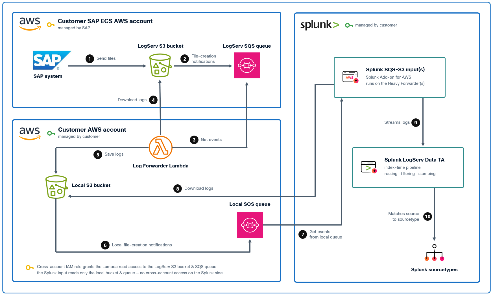
What the copy holds, and what it does not
The Lambda copies the object named in each notification it receives from SAP’s SQS Queue: the notifications still waiting there when you activate its trigger (step 9), then every new object. It never lists SAP’s bucket, so it does not copy history: objects whose notifications are already gone stay only in SAP’s bucket. To load those days, use AWS S3 Direct against SAP’s bucket once this setup works.
The copy is not byte-identical. A gzipped object is stored decompressed, under the same key without .gz (...json.gz becomes ...json), with a content type guessed from its name; only an object that fails to decompress is stored as the original gzip under its original key. The copy therefore takes several times the storage of SAP’s bucket, and each copy’s LastModified time is the time it was copied.
High Level Steps¶
Below are the high level steps for this setup process listed in the order they should be followed.
Please ensure the user you log in with in your AWS Secondary account has the appropriate permissions to perform all the steps outlined below.
- Before you begin: check where each step runs, and install the Splunk Add-on for AWS on each instance that will run the input (see Before You Begin)
- Obtain the ARNs for the SQS Queue and the S3 Bucket in your SAP ECS account
- Create a new S3 Bucket, with a name of your own, in the correct AWS Region in your Secondary account and upload the splunk-logserv-lambda-binary.zip file to the root of the bucket (do not rename the file — the CloudFormation template looks for the object key
splunk-logserv-lambda-binary.zipat the bucket root) - Deploy the AWS CloudFormation Template provided for this remote S3 copy deployment approach in your Secondary account
- Contact SAP LogServ support and request an update to the access policies for the SQS Queue and S3 Bucket residing in your SAP ECS account, and wait for SAP to confirm that both are applied
- Create an Access Key for the new IAM User that was created with the CloudFormation template in your Secondary account
- Configure your AWS Secondary account in the Splunk Add-on for Amazon Web Services (AWS)
- Configure the new cross-account IAM Role from your AWS Secondary account in the Splunk Add-on for Amazon Web Services (AWS).
- Configure a new SQS-Based S3 Input in the Splunk Add-on for Amazon Web Services (AWS), and give it the
_meta = cloud_provider::awsline. - Once SAP has confirmed both policies, create the SQS Queue Trigger on the Lambda function the CloudFormation template created (the template does not create the trigger)
- Confirm that LogServ logs are being ingested into Splunk
Before You Begin¶
Where These Steps Run¶
| Steps | Where |
|---|---|
| 1 to 5, and 9 | The AWS console of your Secondary account, and a request to SAP LogServ Support |
| Install the Splunk Add-on for AWS (below), 6 to 8 | Splunk Web on each instance that will run the input: each heavy forwarder (recommended), the single instance, or, with no heavy forwarder, your Splunk Cloud search head. Configure each heavy forwarder directly, not through a Deployment Server |
| 10 | A search head that can search the LogServ data index |
Several heavy forwarders can read the same local SQS Queue: the queue hands each message to one of them, so they share the work. Give each one the same account, IAM role and input; see Adding Capacity in Capacity Planning and First Start.
Check These First¶
Steps 1 to 4 need nothing in Splunk, so do them on day one (step 1 of the Deployment Roadmap). Check the items below before you go on with step 5.
- The prerequisites are met and the Data TA is on each of those instances (Plan and Prerequisites, Create the Indexes and Install the Data TA). On heavy forwarders, check its build with Version Check. Routing to the LogServ sourcetypes happens at index time, so events indexed before the Data TA arrives keep the sourcetype
sap_logserv_logsfor good. - You have decided cloud attribution and filtering. Both apply at index time, to what is indexed after you save them.
- You have planned the first start. Once its trigger is active, the Lambda copies the object of every notification already waiting in SAP’s queue. Read First Start: The Queue Backlog before step 9, including whether to ask SAP to purge the older messages.
Install the Splunk Add-on for AWS¶
Install the Splunk Add-on for Amazon Web Services (AWS) (Splunkbase app 1876) on each instance from the table above. It runs the SQS-Based S3 input and holds the AWS account and IAM role you configure in steps 6 to 8; the LogServ dashboards do not need it on the search head. See the add-on’s installation documentation.
- Version: 8.2.2 or later is recommended. Splunk advisory SVD-2026-1005 (fixes in third-party packages) says to upgrade to 8.2.2 or higher. The solution enforces no minimum version; these guides were checked on 8.3.1, and the AWS S3 Direct screen shows a warning below 8.1.0.
- Install it directly on each heavy forwarder. Do not add it to the
SAP_LogServ_HeavyForwardersserver class, and do not distribute it with a Deployment Server: a push replaces an app’slocal/folder on the forwarder, which is where Splunk Web saves the account, the IAM role and the input you create in steps 6 to 8. - Just install it now; steps 6 to 8 configure it.
1. Obtain ARNs from SAP ECS Account¶
Before you can create the local S3 Bucket and deploy the CloudFormation template in your Secondary account, you need to obtain the AWS ARN for two resources that reside in your SAP ECS account:
- The S3 Bucket that stores your LogServ logs
- The SQS Queue that receives notifications when new logs are added to the S3 Bucket
You will also need to note the AWS Region where these resources are located, because the S3 Bucket and CloudFormation template in the next two sections must be created and deployed into that same region in your Secondary account.
What does an ARN look like?
AWS Amazon Resource Names (ARNs) follow a predictable format. Examples:
- S3 Bucket ARN:
arn:aws:s3:::sap-hec-clz-ap-south-1-hec53-xsd - SQS Queue ARN:
arn:aws:sqs:ap-south-1:121212121212:sap-hec-clz-ap-south-1-hec53-xsd-logserv
How to obtain the ARNs:
1.a If you do not have console access to your SAP ECS account, contact SAP LogServ Support to obtain the ARN for the S3 Bucket, the ARN for the SQS Queue, and the AWS Region where these resources reside.
1.b If you do have console access to your SAP ECS account, obtain the ARNs yourself:
- For the S3 Bucket: navigate to the S3 console, find the bucket used for LogServ logs, click on the bucket name, and copy the ARN from the Properties tab.
- For the SQS Queue: navigate to the SQS console, find the queue that receives S3 notifications, click on the queue name, and copy the ARN from the Details section.
1.c Save both ARNs and the AWS Region in a secure location – you will reference them when creating the S3 Bucket (next section), deploying the CloudFormation Template, and configuring the SQS-Based S3 Input later in this guide.
2. Create S3 Bucket with Lambda Function ZIP File¶
This bucket holds the Lambda function’s code. The CloudFormation template does not create it; it creates only the bucket for the copies (step 3.i).
2.a Take note of the AWS Region in your SAP ECS account where the S3 Bucket and SQS Queue are located.
2.b Log into your AWS Secondary account and change to the region that matches the region in your SAP ECS account. Create the bucket in that Region, the one you will deploy the stack in: Lambda requires its code bucket in the function’s Region.
2.c Choose a name of your own for the new S3 bucket. S3 bucket names are global: each name can be used by only one AWS account, so pick one no other account is likely to hold, for example splunk-logserv-lambda-code-<your-account-id>-<region>. Write it down; you enter it in step 3.g.
2.d Navigate to the S3 console and create a general purpose S3 bucket using all the default settings
2.e Upload the splunk-logserv-lambda-binary.zip file to the root of the S3 bucket
Example
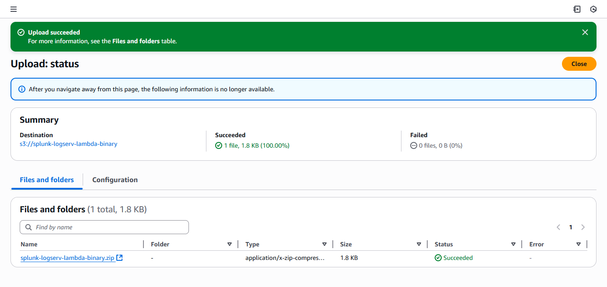
3. Deploy CloudFormation Template¶
Before you deploy the CloudFormation template, take note of the AWS Region in your SAP ECS account where the S3 Bucket and SQS Queue are located as you will need to deploy the CloudFormation template provided in that same region in your Secondary account.
What does the CloudFormation template do?
Creates the following resources:
- An IAM User - Default name is splunk_logserv_user
- An IAM Policy named splunk-logserv-ta-policy
- An IAM Role named splunk-logserv-ta-role
- An Inline IAM Policy on the IAM User to assume the IAM Role created above
- An S3 Bucket with an Event Notification to the SQS Queue below- Default name is splunk-logserv-local-target-bucket
- An SQS Queue - Default name is splunk-logserv-local-target-queue
- A Dead Letter SQS Queue - Default name is splunk-logserv-local-target-queue-dlq. It takes the messages of the local SQS Queue that are received three times without being deleted; it does not protect the SQS Queue in your SAP ECS account
- A Lambda Function (Python 3.12 runtime) - Default name is splunk-logserv-lambda-logforwarder
- A LogGroup used by the Lambda Function
It does not create the bucket for the Lambda code (step 2), the access key (step 5) or the Lambda’s SQS trigger (step 9).
A stack created from an earlier copy of this template runs the Lambda on python3.9, which AWS deprecated on 15 December 2025 (AWS: Lambda runtimes). To move it to Python 3.12, update the stack with the current template and keep the existing parameter values. The runtime is the only resource setting the two templates differ in; the function’s code is the same.
3.a Navigate to the CloudFormation console (ensure the region you are in matches the region in your SAP ECS account)
3.b Click on the Create stack button and select With new resources (standard)
Example
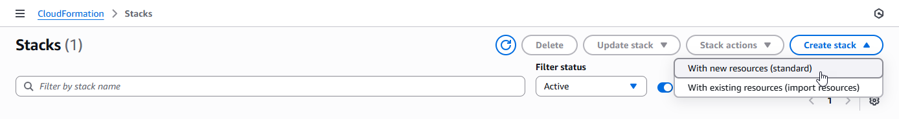
3.c Upload the AWS CloudFormation Template file provided for this remote S3 copy deployment approach, then click the Next button
Example
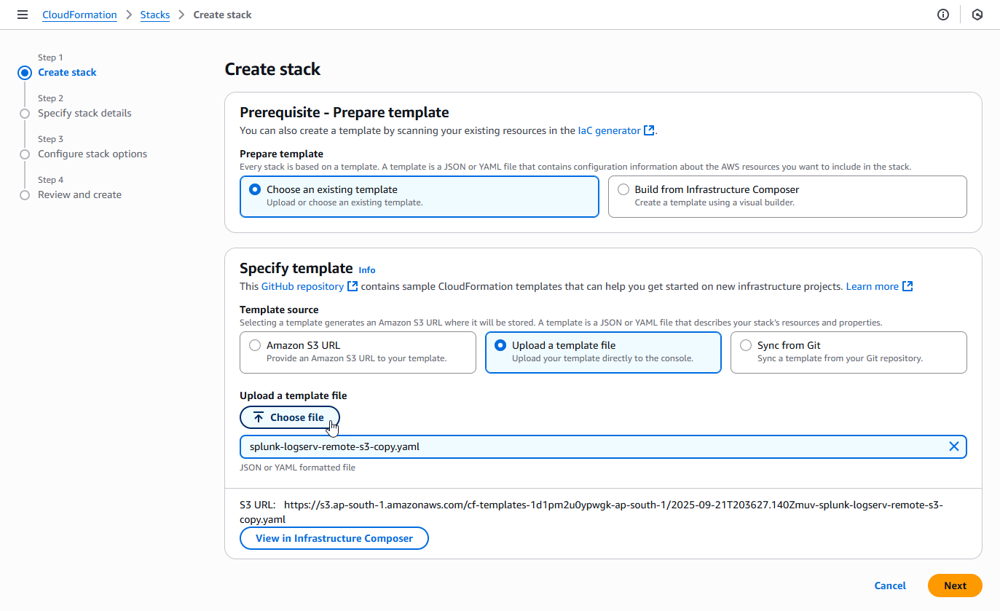
3.d Enter a name for the CloudFormation Stack - splunk-logserv-remote-s3-copy
Example
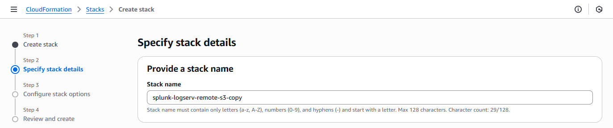
3.e Enter just the name (not the ARN) of the S3 Bucket in your SAP ECS account in the CrossAccountS3Bucket parameter - If your ARN looks like this arn:aws:s3:::sap-hec-clz-ap-south-1-hec53-xsd then just use the name like this sap-hec-clz-ap-south-1-hec53-xsd
Example

3.f Enter the complete ARN of the SQS Queue in your SAP ECS account in the CrossAccountSQSQueueArn parameter
Example

3.g Enter the exact name of the S3 Bucket you created in step 2 in the LambdaCodeBucket parameter. The parameter has no default; the example image shows an older default name, which you must not use.
Example
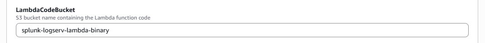
3.h Choose and enter a name for the Lambda Function to be created in your Secondary account in the LambdaFunctionName parameter
Example
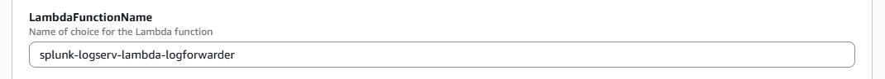
3.i Choose and enter a name for the S3 Bucket to be created in your Secondary account in the LocalS3BucketName parameter. The template creates this bucket for the copies, and bucket names are global too: replace the default with a name of your own, or the stack fails if another account already holds the name.
Example
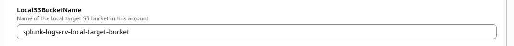
3.j Choose and enter a name for the SQS Queue to be created in your Secondary account in the LocalSQSQueueName parameter
Example
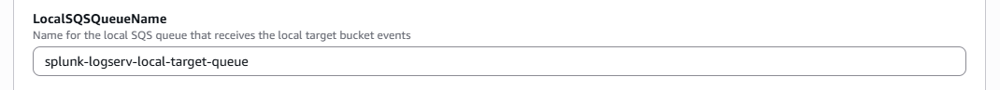
3.k Choose and enter a name for the IAM User to be created in your Secondary account in the NewIAMUserName parameter, then click on the Next button
Example

3.l Scroll down to the bottom of the page and check the I acknowledge that AWS CloudFormation might create IAM resources with custom names checkbox, then click on the Next button
Example
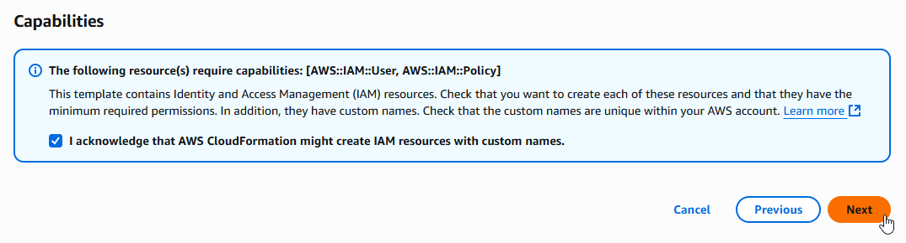
3.m Scroll down to the bottom of the page and click on the Submit button
Example
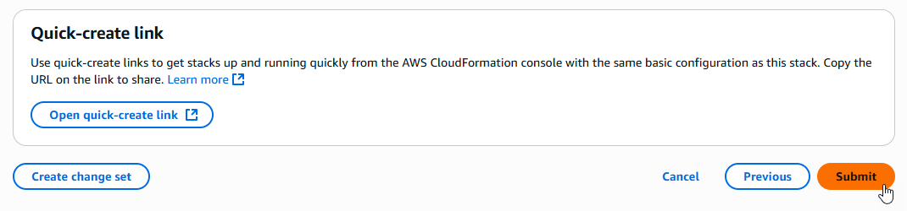
3.n Ensure the deployment of the CloudFormation template completes successfully
Example
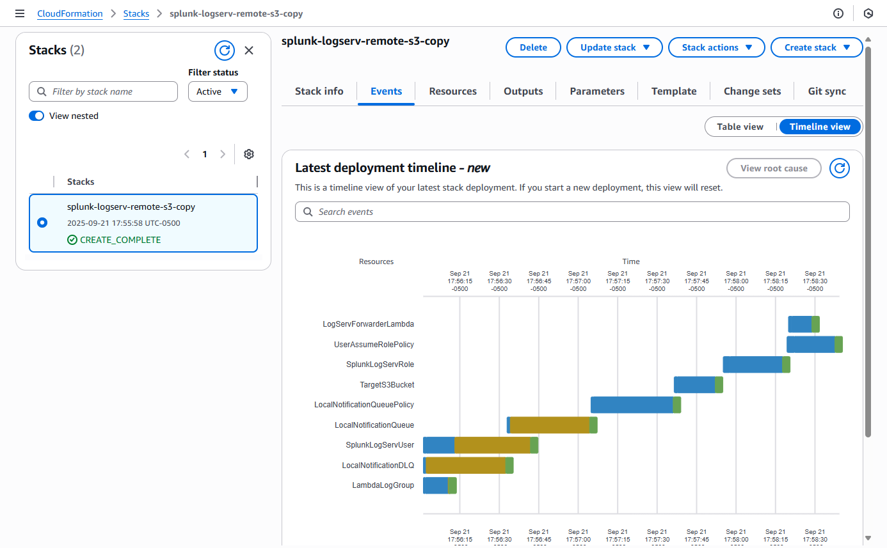
4. Contact SAP LogServ Support¶
Once the deployment of the CloudFormation templates completes successfully, you will need to provide SAP LogServ Support with the ARN of the IAM Role named splunk-logserv-ta-role that was created by the template.
The ARN for the IAM Role should look like the one below but with your 12-digit AWS account Id of your Secondary account.
arn:aws:iam::secondary-account-id:role/splunk-logserv-ta-role
Example access policies for the SQS Queue and S3 Bucket residing in your SAP ECS account are provided as a reference to provide clarity on the specific permissions that need to be applied by the SAP LogServ Support team.
Ask SAP to keep s3:ListBucket on the bucket itself (arn:aws:s3:::<bucket-name>) in the S3 Bucket policy, as the example does. The copy Lambda does not need it, but AWS S3 Direct does when it loads history from SAP’s bucket: for a bucket in SAP’s account, AWS requires both your IAM Role’s policy and SAP’s bucket policy to allow it. The template already grants it on your side.
Wait until SAP LogServ Support confirms that both policies are applied before you create the SQS Queue Trigger in step 9. Steps 5 to 8 can be done in the meantime.
5. Create Access Key for IAM User¶
The CloudFormation template creates the IAM User but no access key for it, so you create one here (AWS: To create an access key for an IAM user).
5.a Navigate to the IAM console in your Secondary account and search for the IAM User name you used when deploying the CloudFormation template. Click on the name of the IAM User to see the user details.
Example
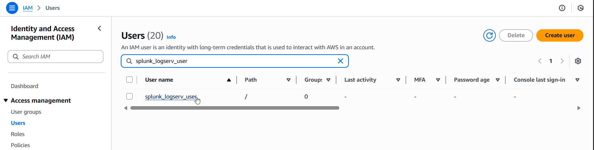
5.b Click on the Security credentials tab in the middle of the screen. Scroll down and click on the Create access key button.
Example
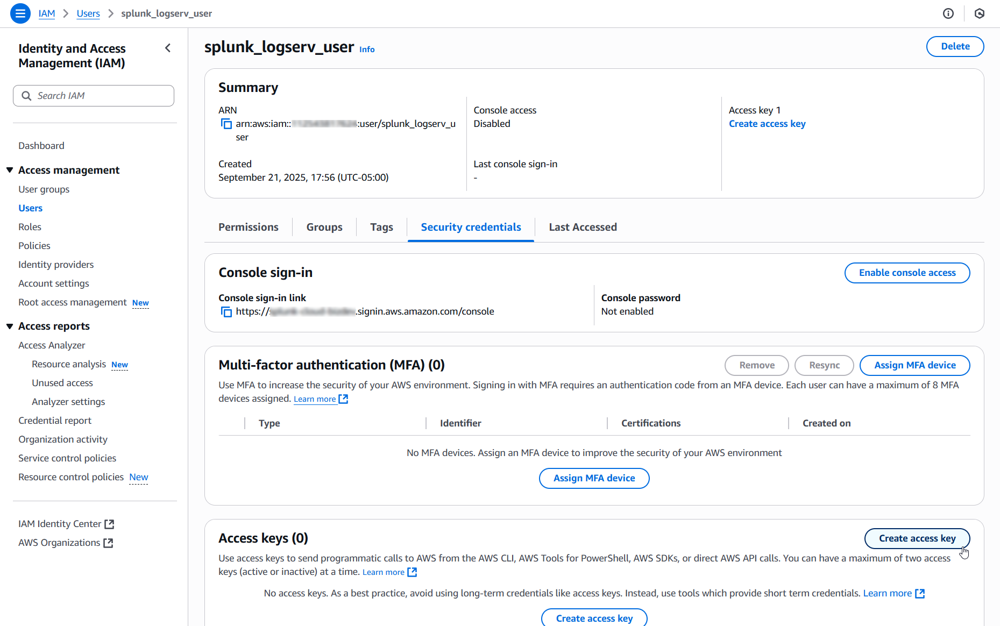
5.c Select the Local code use case, check the Confirmation checkbox and click on the Next button.
Example
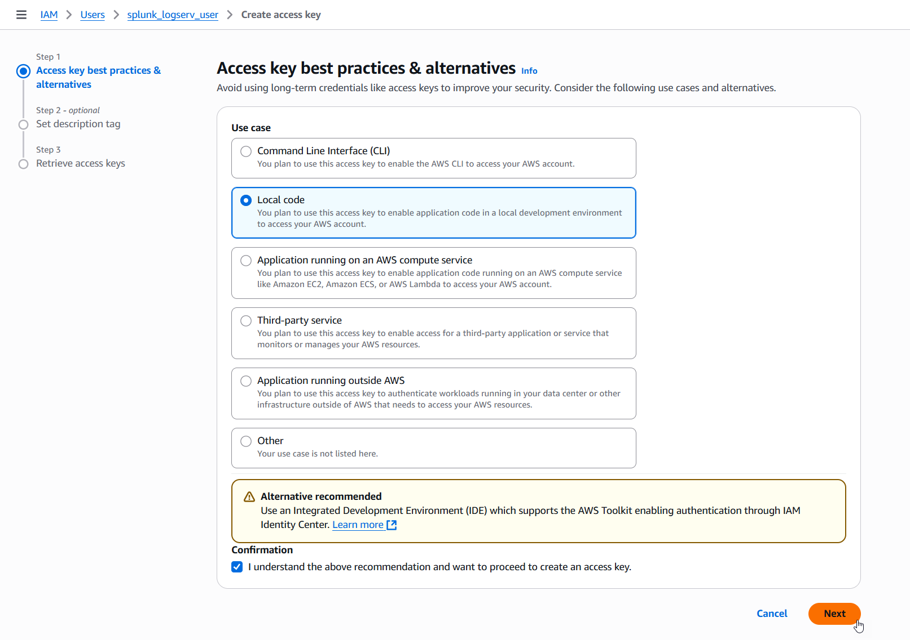
5.d Enter a description tag value if desired and click on the Create access key button.
Example
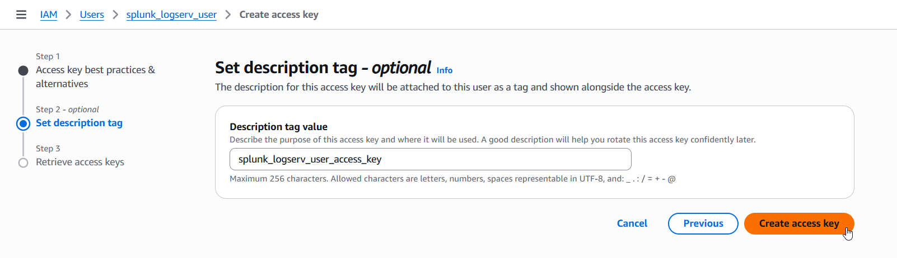
5.e Copy the values for both the Access key and the Secret access key and save them in a secure place as you will need them in the upcoming steps. Now click on the Done button.
Example
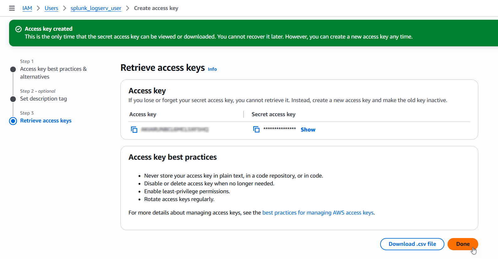
6. Configure Secondary Account (AWS Add-on)¶
Please ensure the user you log in with in your Splunk instance has the appropriate permissions to perform all the steps outlined below. Do steps 6 to 8 on each instance that will run the input (Where These Steps Run).
6.a Login to your Splunk console then find and open the Splunk Add-on for AWS App
Example
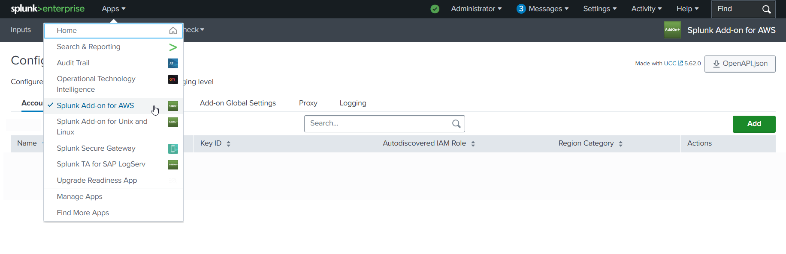
6.b Click on the Configuration tab, then click on the Account tab, then click on the Add button
Example
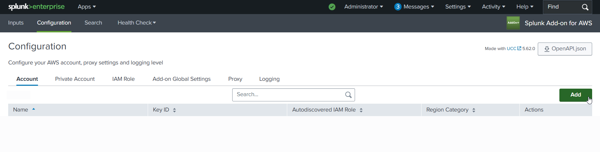
6.c Choose and enter a descriptive name for the account in the Name field. Enter the access key ID you created for the IAM User in the Key ID field and its secret in the Secret Key field. Leave the Region Category set to Global. Click on the Add button.
Example
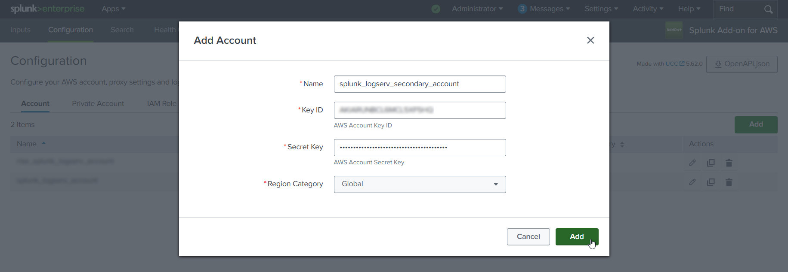
7. Configure IAM Role (AWS Add-on)¶
7.a Click on the IAM Role tab to the right of the Account tab, then click on the Add button
Example
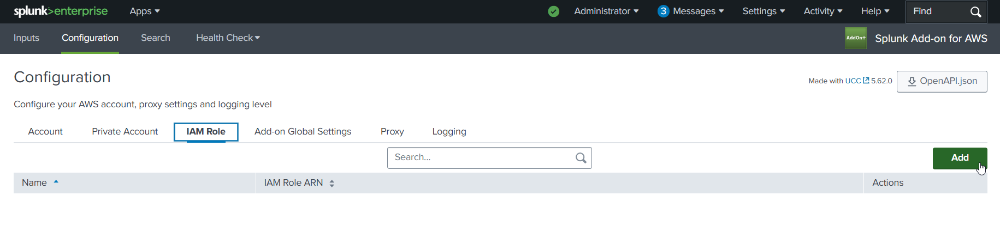
7.b Choose and enter a descriptive name for the role in the Name field. Enter the IAM Role ARN in the IAM Role ARN field, then click the Add button. The ARN for the IAM Role should look like the one below but with your 12-digit AWS account Id of your Secondary account.
- arn:aws:iam::secondary-account-id:role/splunk-logserv-ta-role
Example
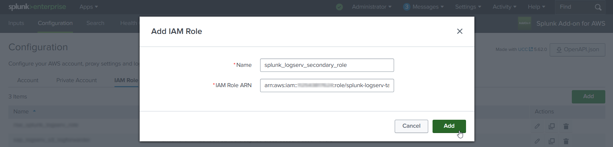
8. Configure SQS-Based S3 Input (AWS Add-on)¶
Create the input only after the Data TA is on this instance (Check These First). It reads the local SQS Queue, which stays empty until the trigger in step 9 is active.
8.a Click on the Inputs tab. Click on the Create New Input button. Select the Custom Data Type option at the bottom of the drop-down, then select the SQS-Based S3 (Recommended) option.
Example
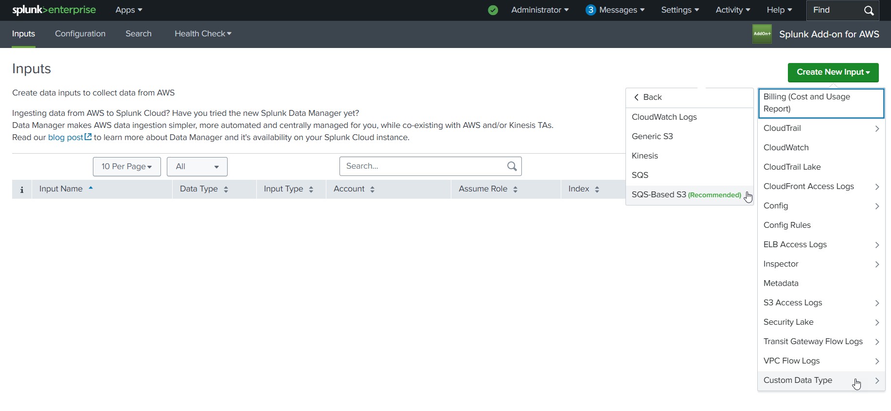
8.b Fill out the first three fields in the SQS-Based S3 Input (Name, AWS Account, Assume Role)
- Choose and enter a descriptive name for the input
- Select the AWS Account you configured previously
- Select the IAM Role you configured previously
Example
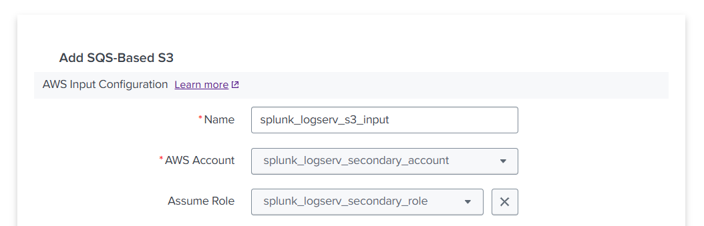
8.c Fill out the next three fields in the SQS-Based S3 Input (Force using DLQ, AWS Region, Use Private Endpoints)
- Leave the Force using DLQ (Recommended) checkbox checked
- Select the AWS Region where you deployed the CloudFormation template previously
- Leave the Use Private Endpoints checkbox unchecked
Example
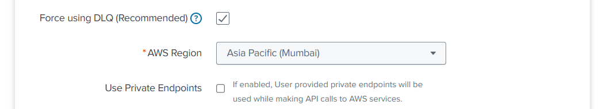
8.d Fill out the next three fields in the SQS-Based S3 Input (SQS Queue Name, SQS Batch Size, S3 File Decoder)
- Select the SQS Queue Name you entered in step 3.j (LocalSQSQueueName) when previously deploying the CloudFormation template
- Leave the SQS Batch Size set to 10
- Leave the S3 File Decoder set to Custom Logs
Example
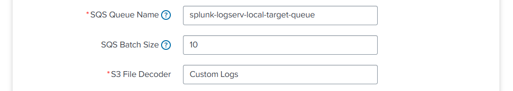
8.e Fill out the next three fields in the SQS-Based S3 Input (Signature Validate All Events, Source Type, Index)
- Uncheck the Signature Validate All Events checkbox (
sqs_sns_validation = 0ininputs.conf). The notifications reach the queue directly from S3, not through SNS, so they carry no SNS signature; with the box checked, the add-on logs that a message has no valid SNS signature and does not process it. - Enter the value of sap_logserv_logs in the Source Type field
- Enter sap_logserv_logs in the Index field: the LogServ data index, or the name you gave it if you renamed it (Renaming an Index)
- Click on the Add button
Example
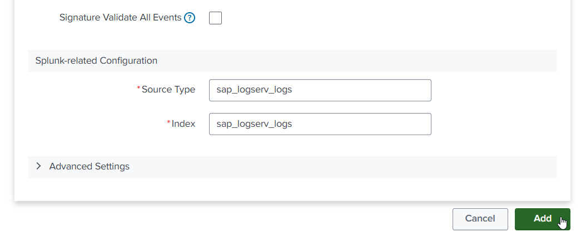
8.f Add the cloud attribution to the input. Leave the Data TA’s Cloud Provider dropdown at Not set, and give this input its own stamp instead (Choose Cloud Attribution). The form has no field for it. The local SQS Queue stays empty until the trigger in step 9 is active, so add the line now, before the input has anything to read:
- Add this line to the input’s stanza,
[aws_sqs_based_s3://<input name>], in$SPLUNK_HOME/etc/apps/Splunk_TA_aws/local/inputs.conf:
_meta = cloud_provider::aws
- Restart Splunk.
- After any later edit of this input in the form, check that the line is still there.
This follows Add the _meta Line to an AWS Input; the disable and enable steps there are not needed while the local SQS Queue is empty. The sequence has not yet been run end to end on Splunk Add-on for AWS 8.3.1, and whether a later edit of the input in the form keeps the line is not known. Once events arrive (step 10), check the result with the search in Check the Result.
Events the input reads without the line carry no cloud_provider field: the LogServ App’s dashboards count them as AWS, but searches of the raw events do not see it. On Splunk Cloud, where you cannot edit the file, see Splunk Cloud Without a Heavy Forwarder.
9. Create the SQS Queue Trigger¶
Create the trigger only after SAP LogServ Support has confirmed that both policies from step 4 are applied, and at least 5 minutes after the stack was created.
Once the trigger is active, the Lambda copies the object of every notification already waiting in the SQS Queue in your SAP ECS account (up to 14 days of them) into the S3 Bucket in your Secondary account, and the forwarder parses them all on top of the live feed. It copies nothing older: objects whose notifications are already gone stay only in SAP’s bucket, and AWS S3 Direct loads them. Before you activate it, see First Start: The Queue Backlog, which includes asking SAP to purge the older messages.
9.a Navigate to the Lambda console in your Secondary account and ensure the region you are in matches the region in your SAP ECS account. Find the Lambda function that was created by the CloudFormation template and click on its name to view details.
Example
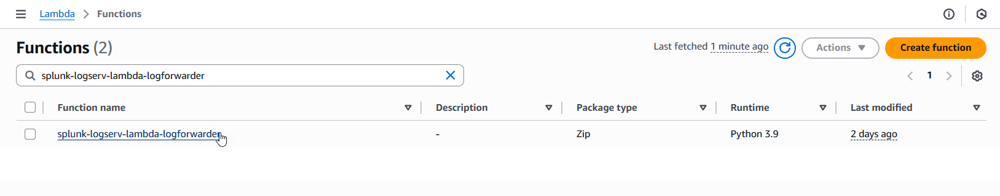
9.b The CloudFormation template does not create this trigger: the Lambda can read SAP’s SQS Queue only after SAP has applied the policies, so the trigger is a manual step. On a new stack, follow the Create SQS Queue Trigger steps below. Use Configure SQS Queue Trigger only if the Function overview diagram already shows an SQS trigger, as in the example image below: for example one you created earlier, or one left from a stack you deleted and created again with the same Lambda function name (AWS does not delete a function’s triggers when it deletes the function).
Example
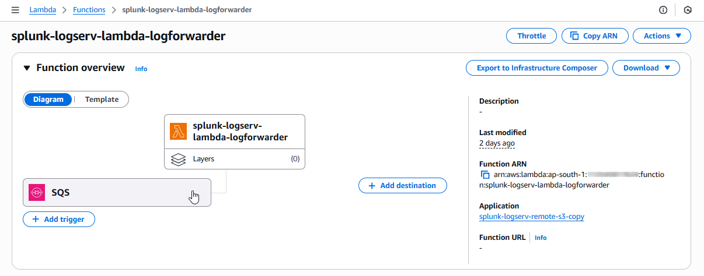
Create SQS Queue Trigger¶
- Click on the Add trigger button on the left side of the Function overview diagram to create a new SQS Queue Trigger
Example
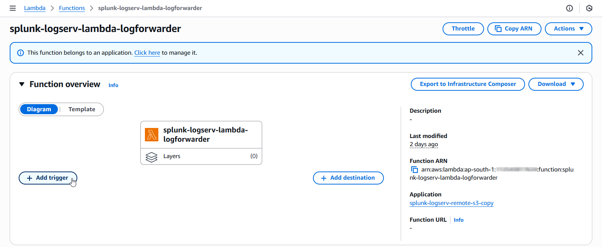
- Click on the dropdown and select SQS as the trigger source
Example
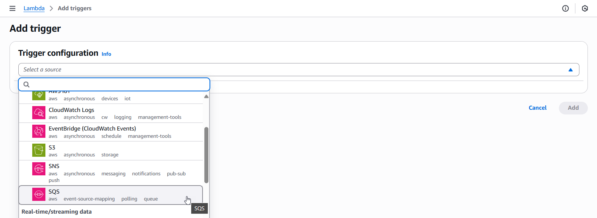
-
Fill out the first three fields in the SQS Trigger (SQS queue ARN, Activate trigger, Enable metrics)
- Enter the complete ARN of the SQS Queue in your SAP ECS account
- Check the Activate trigger checkbox
- Check the Enable metrics checkbox
Example
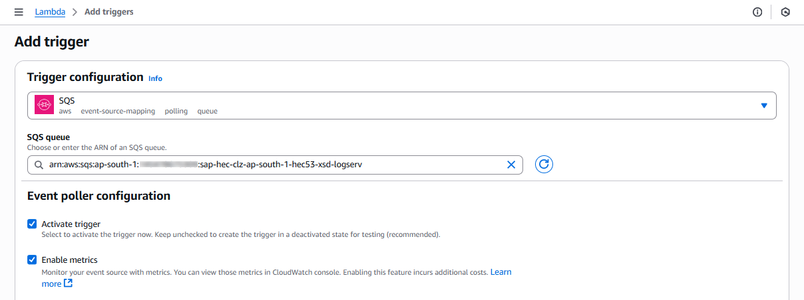
-
Fill out the next three fields in the SQS Trigger (Batch size, Batch window, Maximum concurrency)
- Set the Batch Size to 10
- Set the Batch window to 5
- Set the Maximum concurrency to 10, the value in the template’s commented-out trigger. The example image shows 8, an older value: enter 10.
Example
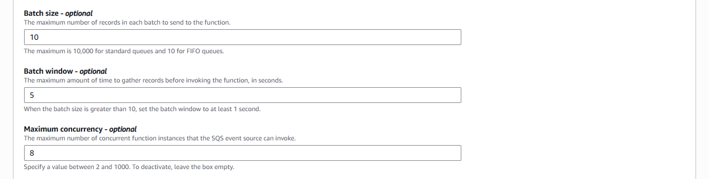
-
Fill out the last field in the SQS Trigger (Report batch item failures) and save the trigger
- Check the Report batch item failures checkbox. The copy Lambda returns the ID of each message it could not copy in a
batchItemFailureslist. With this box checked, Lambda makes only those messages visible again in SAP’s SQS Queue, for another try (AWS: Handling errors for an SQS event source in Lambda). Without it, Lambda deletes the whole batch, those messages included, because the function itself does not fail. - Click on the Add button on the bottom right of the screen to save the trigger
- Check the Report batch item failures checkbox. The copy Lambda returns the ID of each message it could not copy in a
Example
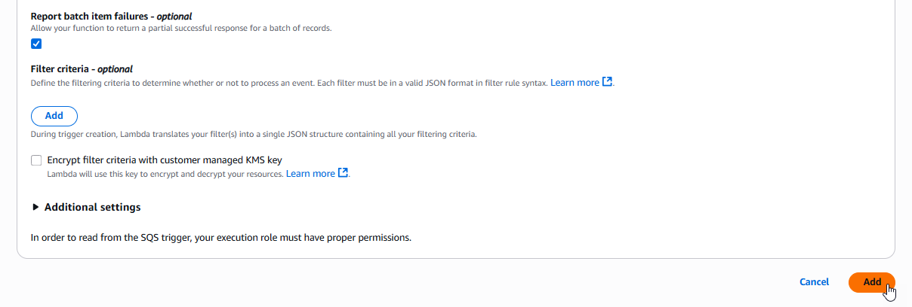
Configure SQS Queue Trigger¶
Use these steps only when a trigger already exists (see 9.b), to check that it has the settings below.
- Click on the SQS rectangle on the left side of the Function overview diagram to navigate to the SQS Queue Trigger configuration
Example

- Check the checkbox for the SQS trigger and then click on the Edit button
Example
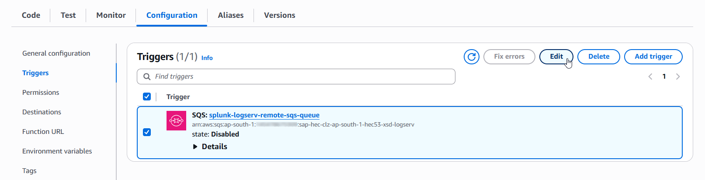
-
Validate the first three fields in the SQS Trigger (SQS queue ARN, Activate trigger, Enable metrics)
- Ensure the complete ARN of the SQS Queue in your SAP ECS account is referenced here
- Ensure the Activate trigger checkbox is checked
- Ensure the Enable metrics checkbox is checked
Example
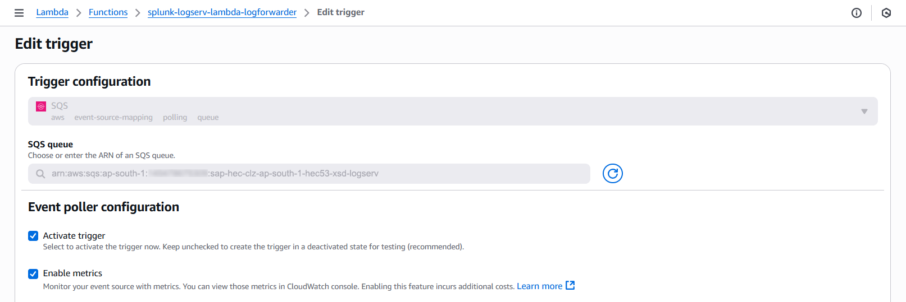
-
Validate the next three fields in the SQS Trigger (Batch size, Batch window, Maximum concurrency)
- Ensure the Batch Size is set to 10
- Ensure the Batch window is set to 5
- Ensure the Maximum concurrency is set to 10 (the example image shows 8, an older value)
Example
-
Validate the last field in the SQS Trigger (Report batch item failures) and save the trigger
- Ensure the Report batch item failures checkbox is checked
- Click on the Save button on the bottom right of the screen to save the trigger
Example
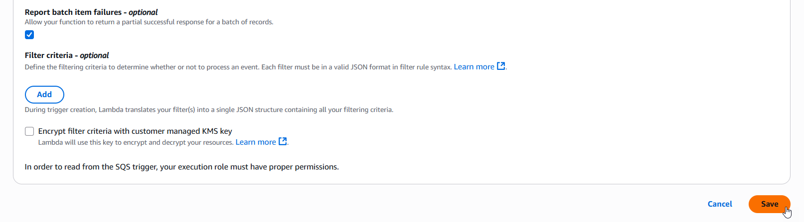
10. Confirm LogServ Logs are Being Ingested¶
After completing all the previous steps, verify that LogServ logs are successfully being ingested into Splunk.
The first events typically appear within 5-10 minutes of activating the SQS Queue Trigger in step 9. The Lambda function copies objects from the SAP ECS S3 Bucket to the local target S3 Bucket in your Secondary account when an SQS notification arrives, then the SQS-Based S3 Input polls the local SQS Queue at the configured interval (default 300 seconds, under the input’s Advanced Settings), so allow a short lag before the first events arrive.
10.a Log in to Splunk Web on a search head that can search the LogServ data index and open the Search & Reporting app.
10.b Search with the index name itself (sap_logserv_logs, or the name you gave it). The sap_logserv_idx_macro macro is defined only where the LogServ App or the Data TA is installed, which a search head may not have yet.
index=sap_logserv_logs earliest=-1h | stats count by sourcetype, host
10.c You should see the LogServ sourcetypes your SAP LogServ subscription delivers, from several hosts; Supported Log Types lists them. Log types without a route of their own keep the sourcetype sap_logserv_logs. Verify Your Data has the full set of checks, including the routing and attribution searches.
10.d Check that copies arrive: the S3 Bucket in your Secondary account gains new objects under logserv/, without the .gz ending.
10.e If no events appear after 15-20 minutes, troubleshoot as follows:
- Lambda function errors – In the AWS Console, open CloudWatch Logs for the Lambda function created by the CloudFormation template (Section 3). Check for errors copying objects from the SAP ECS S3 Bucket to your local S3 Bucket. Common causes are missing access policies on the SAP ECS resources (Section 4) or an IAM Role propagation delay (wait 5 minutes after initial setup).
- Local SQS Queue has no messages – Verify the SAP LogServ Support team has applied the updated access policies (from Section 4) to the SQS Queue and S3 Bucket in your SAP ECS account. Without those policies, the Lambda function cannot receive SQS notifications from the SAP ECS account or read from the SAP ECS S3 Bucket. Also verify the SQS Queue Trigger on the Lambda function is active (Section 9).
- Authentication or permission errors – In the Splunk Add-on for AWS, check the logs for errors: run
index=_internal source=*aws* level IN (ERROR,WARNING) earliest=-1h | head 50. Common causes are a mis-copied Access Key/Secret Key (Section 5), an incorrect IAM Role ARN (Section 7), or the IAM Role not yet propagated through AWS (wait 5 minutes after initial setup). - SQS URL format – Double-check the SQS Queue Name field in the SQS-Based S3 Input (Section 8) points to the local SQS Queue that was created by the CloudFormation template in your Secondary account (not the SAP ECS SQS Queue).
- Wrong AWS Region – The CloudFormation template (Section 3) and the SQS-Based S3 Input (Section 8) must both be in the same AWS Region as the SQS Queue and S3 Bucket in your SAP ECS account.
Rotate the Access Key¶
The access key from step 5 does not expire on its own; replace it as your security policy requires. An IAM User can hold two access keys at a time, so you can switch without a gap (AWS: Managing access keys for IAM users). The Lambda does not use the key: it runs as the IAM Role.
- In the IAM console of your Secondary account, open the IAM User and create a second access key, as in step 5. Save the new key ID and secret.
- On each instance that runs the input, open the Splunk Add-on for AWS, then Configuration → Account, edit the account from step 6, enter the new access key ID in Key ID and the new secret in Secret Key, and save.
- Check that events still arrive (step 10) and that the
_internalsearch in step 10.e shows no new authentication errors. - In IAM, make the old key Inactive. Once nothing has failed for a day, delete it.
Next Steps¶
- Verify Your Data.
- Load the history you need with AWS S3 Direct.
- Install the LogServ App and seed its dashboards.